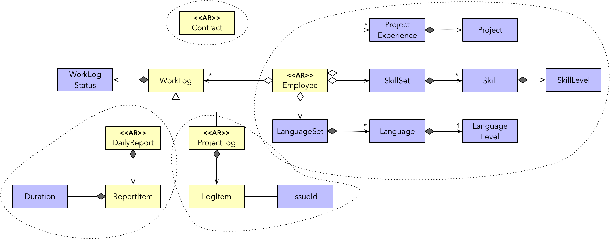

- 001 「战略篇」访谈 DDD 和微服务是什么关系？.md.html
- 002 「战略篇」开篇词：领域驱动设计，重焕青春的设计经典.md.html
- 003 领域驱动设计概览.md.html
- 004 深入分析软件的复杂度.md.html
- 005 控制软件复杂度的原则.md.html
- 006 领域驱动设计对软件复杂度的应对（上）.md.html
- 007 领域驱动设计对软件复杂度的应对（下）.md.html
- 008 软件开发团队的沟通与协作.md.html
- 009 运用领域场景分析提炼领域知识（上）.md.html
- 010 运用领域场景分析提炼领域知识（下）.md.html
- 011 建立统一语言.md.html
- 012 理解限界上下文.md.html
- 013 限界上下文的控制力（上）.md.html
- 014 限界上下文的控制力（下）.md.html
- 015 识别限界上下文（上）.md.html
- 016 识别限界上下文（下）.md.html
- 017 理解上下文映射.md.html
- 018 上下文映射的团队协作模式.md.html
- 019 上下文映射的通信集成模式.md.html
- 020 辨别限界上下文的协作关系（上）.md.html
- 021 辨别限界上下文的协作关系（下）.md.html
- 022 认识分层架构.md.html
- 023 分层架构的演化.md.html
- 024 领域驱动架构的演进.md.html
- 025 案例 层次的职责与协作关系（图文篇）.md.html
- 026 限界上下文与架构.md.html
- 027 限界上下文对架构的影响.md.html
- 028 领域驱动设计的代码模型.md.html
- 029 代码模型的架构决策.md.html
- 030 实践 先启阶段的需求分析.md.html
- 031 实践 先启阶段的领域场景分析（上）.md.html
- 032 实践 先启阶段的领域场景分析（下）.md.html
- 033 实践 识别限界上下文.md.html
- 034 实践 确定限界上下文的协作关系.md.html
- 035 实践 EAS 的整体架构.md.html
- 036 「战术篇」访谈：DDD 能帮开发团队提高设计水平吗？.md.html
- 037 「战术篇」开篇词：领域驱动设计的不确定性.md.html
- 038 什么是模型.md.html
- 039 数据分析模型.md.html
- 040 数据设计模型.md.html
- 041 数据模型与对象模型.md.html
- 042 数据实现模型.md.html
- 043 案例 培训管理系统.md.html
- 044 服务资源模型.md.html
- 045 服务行为模型.md.html
- 046 服务设计模型.md.html
- 047 领域模型驱动设计.md.html
- 048 领域实现模型.md.html
- 049 理解领域模型.md.html
- 050 领域模型与结构范式.md.html
- 051 领域模型与对象范式（上）.md.html
- 052 领域模型与对象范式（中）.md.html
- 053 领域模型与对象范式（下）.md.html
- 054 领域模型与函数范式.md.html
- 055 领域驱动分层架构与对象模型.md.html
- 056 统一语言与领域分析模型.md.html
- 057 精炼领域分析模型.md.html
- 058 彩色 UML 与彩色建模.md.html
- 059 四色建模法.md.html
- 060 案例 订单核心流程的四色建模.md.html
- 061 事件风暴与业务全景探索.md.html
- 062 事件风暴与领域分析建模.md.html
- 063 案例 订单核心流程的事件风暴.md.html
- 064 表达领域设计模型.md.html
- 065 实体.md.html
- 066 值对象.md.html
- 067 对象图与聚合.md.html
- 068 聚合设计原则.md.html
- 069 聚合之间的关系.md.html
- 070 聚合的设计过程.md.html
- 071 案例 培训领域模型的聚合设计.md.html
- 072 领域模型对象的生命周期-工厂.md.html
- 073 领域模型对象的生命周期-资源库.md.html
- 074 领域服务.md.html
- 075 案例 领域设计模型的价值.md.html
- 076 应用服务.md.html
- 077 场景的设计驱动力.md.html
- 078 案例 薪资管理系统的场景驱动设计.md.html
- 079 场景驱动设计与 DCI 模式.md.html
- 080 领域事件.md.html
- 081 发布者—订阅者模式.md.html
- 082 事件溯源模式.md.html
- 083 测试优先的领域实现建模.md.html
- 084 深入理解简单设计.md.html
- 085 案例 薪资管理系统的测试驱动开发（上）.md.html
- 086 案例 薪资管理系统的测试驱动开发（下）.md.html
- 087 对象关系映射（上）.md.html
- 088 对象关系映射（下）.md.html
- 089 领域模型与数据模型.md.html
- 090 领域驱动设计对持久化的影响.md.html
- 091 领域驱动设计体系.md.html
- 092 子领域与限界上下文.md.html
- 093 限界上下文的边界与协作.md.html
- 094 限界上下文之间的分布式通信.md.html
- 095 命令查询职责分离.md.html
- 096 分布式柔性事务.md.html
- 097 设计概念的统一语言.md.html
- 098 模型对象.md.html
- 099 领域驱动设计参考过程模型.md.html
- 100 领域驱动设计的精髓.md.html
- 101 实践 员工上下文的领域建模.md.html
- 102 实践 考勤上下文的领域建模.md.html
- 103 实践 项目上下文的领域建模.md.html
- 104 实践 培训上下文的业务需求.md.html
- 105 实践 培训上下文的领域分析建模.md.html
- 106 实践 培训上下文的领域设计建模.md.html
- 107 实践 培训上下文的领域实现建模.md.html
- 108 实践 EAS 系统的代码模型.md.html
- 109 后记：如何学习领域驱动设计.md.html
- 捐赠
101 实践 员工上下文的领域建模
从本章开始，我将延续《领域驱动战略设计》获得的 EAS 系统战略设计输出，开展领域驱动战术设计。通过 EAS 系统这样一个真实案例，我将完整地演练领域分析建模、领域设计建模与领域实现建模的全过程。限于篇幅，我无法呈现整个领域模型驱动设计的完整过程，但也尽可能将设计过程中遭遇的典型问题、做出的设计决策进行了阐述，并给出了部分设计结果作为参考。同时，我还会持续不断地将 EAS 项目的产品代码与测试代码发布到 GitHub 的 Repository 上。
企业应用套件
企业应用套件（Enterprise Application Suite，EAS）是一个根据软件集团公司应用信息化的要求而开发的企业级应用软件。EAS 系统提供了大量简单、快捷的操作接口，使得集团相关部门能够更快捷、更方便、更高效地处理日常事务工作，并为管理者提供决策参考、流程简化，建立集团与各部门、员工之间交流的通道，有效地提高工作效率，实现整个集团的信息化管理。
在《领域驱动战略设计》中，我已经全面梳理和介绍了 EAS 系统的项目背景、业务期望与愿景，通过需求分析和问题痛点分析获得了系统的子领域，通过确定的业务主流程与史诗级故事和主故事获得了系统的主要用例，并由此确定了整个系统的限界上下文。若需要了解 EAS 系统的整体情况与项目背景，可以阅读《领域驱动战略设计》中的内容，也可以访问 GitHub 上eas-ddd 项目的 Wiki 获得该项目的背景知识与战略设计的输出。
领域模型驱动设计
在《领域驱动战略设计实践》中，我们通过用例识别了EAS系统的限界上下文。定义的用例不仅可以帮助我们识别限界上下文，还可以用于领域分析建模，这个建模工作需要在限界上下文边界的约束下开展。
考虑到内容篇幅，我挑选了相对典型的员工上下文、考勤上下文和项目上下文分别开展领域分析建模。由于这些限界上下文的业务逻辑相对简单，我主要采用了名词动词法完成了领域分析建模。在获得领域分析模型后，再按照聚合设计的庖丁解牛过程进一步细化分析结果，获得了以聚合为核心的领域设计模型。
为了完整地展示以事件风暴为纵贯线的领域模型驱动设计过程，我挑选了相对独立且具有复杂领域逻辑的培训上下文详细地阐述了如何利用事件风暴、场景驱动设计、设计模式和测试驱动开发进行领域建模。至于其余限界上下文的领域模型，请访问 GitHub 上的 eas-ddd 项目及其问题列表与 Wiki 了解和阅读更多内容。
实践：EAS 系统的领域模型
员工上下文的领域建模
业务需求
员工上下文的主要功能包括员工信息管理和工作日志。
员工信息管理由人事专员负责办理员工入职和离职手续，维护员工信息和管理员工合同。办理员工入职手续时，首先需要新增员工。在输入员工基本信息时，需要通过组织上下文选择部门。作为一家软件外包集团，员工的技能、语言能力与项目经验是必备信息，需要由人事专员手工输入。如果入职新员工来自人才储备库，可以将人才储备库中的信息直接作为入职员工的信息，即将候选人才直接“升级”为正式员工。这些信息也是生成员工简历的必要数据。为了减轻市场人员的工作量，系统提供简历自动生成的功能。员工的项目经验包括入职前的项目经验，入职后参与的项目会作为项目经验的一部分自动添加到员工项目经验中。
员工入职后，需要和公司签订合同。人事专员需要在员工签订了合同之后，在系统中维护合同条款的基本信息，并上传合同附件。
员工若要离职，需要执行离职流程。为了简化业务，这里未考虑与工作流的集成，故而只需要人事专员直接办理员工离职手续即可。离职后，员工的状态被设置为“离职”状态。
公司制度要求员工每个工作日都要填写和提交工作日志。工作日志分为日报和项目日志。
填写日报时，可以保存为日报草稿，也可以直接提交。提交后的日报不允许再进行编辑。日报草稿既可以编辑，也可以删除。如果工作日当天没有提交日报，且员工又没有请假，系统会根据设置的提醒时间发送邮件，提醒员工提交日报。当员工作为项目成员认领了项目的任务时，可以为任务填写项目日志。项目任务的信息会自动成为项目日志内容的一部分，员工可以编辑项目日志的内容。员工可以查看自己提交的工作日志，部门主管则可以查看该部门所有员工提交的工作日志。
领域分析模型
分析员工上下文的需求，可以通过名词动词法初步获得员工上下文的领域概念，包括：
- 员工（Employee）
- 项目经验（Project Experience）
- 技能（Skill）
- 外语（Foreign Language）
- 合同（Contract）
- 简历（Resume）
- 工作日志（WorkLog）
项目经验由多个项目（Project）组成，包括项目名、项目周期、项目描述、技术栈和角色。注意，员工上下文的项目信息仅仅是一种静态的项目经验描述，不能将该领域概念与项目上下文中的项目概念混为一谈。但是，由于员工入职后参与的项目也会加入到项目经验中，此时，项目上下文中的项目信息会作为输入传入到员工上下文，并转换为该上下文的 Project 对象。
一个员工可以拥有多项技能，故而可以引入技能集（Skill Set）概念，每个技能都有一个评估水平（Skill Level）。外语技能也具有相似的领域模型，引入语言集（Language Set)和语言水平（Language Level）。注意，在 EAS 系统中，Language 特指日常交流的自然语言，无需再多余的命名为 Foreign Language。至于编程语言，则属于技能的一种。
员工的合同（Contract）定义了合同条款的基本信息，同时还包含了合同附件的文件地址。
业务需求希望系统能够根据员工的信息自动生成简历（Resume），这似乎预示着需要定义 Resume 领域类；然而，由于简历内容来自员工，该需求的真实目的是生成一份简历文档，属于一个无状态的领域行为，并不需要定义对应的领域类。
工作日志（WorkLog）由日报（DailyReport）与项目日志（ProjectLog）组成。每一份工作日志都由多个日志项（LogItem）组成。工作日志需要定义日志状态（WorkLogStatus），用以区分草稿（Draft）日志和正式日志。
由此，可以得到初步的领域分析模型：
领域设计模型
在获得领域分析模型后，可以按照聚合设计的庖丁解牛过程对领域分析模型进行细化。首先，需要理顺对象图，即进一步明确类之间的关系，同时识别模型中的实体与值对象。
员工需要项目经验、技能与语言技能，但这些信息并非员工必须的属性，故而它们之间存在 OO 聚合（Aggregation）关系。员工和合同之间存在普通的依赖关系。工作日志与日报、项目日志之间并非组合关系，而是代表“is”的继承关系，即日报与项目日志都是一种工作日志，可将 WorkLog 定义为父类，由 DailyReport 与 ProjectLog 继承它。WorkLog 父类定义了共同的属性 WorkLogStatus，用以区分草稿日志和正式日志。由于项目日志的内容来自项目上下文的任务分配，并非员工自行填写，因此项目日志的状态只能是正式日志，它的日志项内容也有别于日报。这是它们之间存在的差异。
毫无疑问，Employee、Contract 与 DailyReport、ProjectLog 都是实体。每个日志项也应该定义为实体，因为两个内容完全相同的日志项，只要其身份标识不同，也应该认为是不同的日志项。 ProjectExperience 与 Project 似乎应定义为实体，但是在员工上下文，如果两个项目的值完全相同，就可以认为是同一个对象，故而应定义为值对象。理顺对象图后的领域模型如下所示，其中黄色代表实体、蓝色代表值对象：
接下来，分解关系薄弱处，从而划定聚合边界。虽然 Employee 与 ProjectExperience 等属性都是 OO 的聚合关系，但由于 ProjectExperience 等皆被定义为值对象，不可能拆分到单独的 DDD 聚合中，应定义在 Employee 聚合边界内。由此可获得初步的聚合边界：
最后，需要遵循聚合设计的原则调整聚合的边界，这需要考察概念的完整性和独立性、业务规则的不变性以及数据的一致性。由于员工聚合边界内的类除了 Employee 是实体外，其余皆为值对象，因此不用调整员工聚合边界。DailyReport 与 ProjectLog 虽然都继承了 WorkLog 父类，但是它们之间的领域行为和属性存在一定差异，彼此之间也不存在概念完整性与不变性，因此应该将其定义为两个独立的聚合。调整后的聚合设计为：

四个聚合的根实体分别为 Employee、Contract、DailyReport 与 ProjectLog，以 <<AR>> 缩写标识聚合根（Aggregate Root）。
类图表达的领域设计模型仍有不足之处，因为它仅体现了类与类之间的静态关系。通过场景驱动设计，对具有业务价值的领域场景进行任务分解，再针对角色构造型分配职责，可以获得该场景对应的时序图。时序图可以更好地体现类之间的动态协作关系，并由此获得领域服务。
以“员工入职”领域场景为例，分解的任务如下所示：
- 入职
- 验证员工信息
- 生成员工号
- 获取最近入职员工的顺序号
- 按照规则生成员工号
- 根据身份证号或手机号确认该员工是否已经存在
- 添加员工
领域场景分配给应用服务 EmployeeAppService，组合任务“入职”分配给领域服务 EmployeeService，组合任务“生成员工号”也可以分配给领域服务 EmployeeService，但为了避免该领域服务承担太多的职责，可以为该职责定义专门的领域服务 EmployeeIdGenerator。分解的原子任务如果无需访问外部资源，都应分配给 Employee 聚合，访问数据库的原子任务则分配给聚合对应的资源库 EmployeeRepository。
根据应用服务 API 的设计原则，EmployeeAppService 接受的参数为请求消息对象 OnboardingRequest。该请求消息对象本该负责领域对象的转换工作，即在其定义的 toEmployee() 方法中创建 Employee 聚合根实体的实例。然而，在创建一名新员工时，由于需要为其生成新的员工号，且员工号的生成需要访问数据库，为保证请求消息对象的单一职责，就需要将转换职责分配给专门的装配器 OnboardingRequestAssembler。装配器的引入可以认为是领域驱动设计应用层的一种设计模式。这一设计模式在一定程度上影响了场景驱动设计的过程，分解的任务与职责的分配需要做出适当调整，该领域场景的时序图脚本为：
EmployeeAppService.onboarding(OnboardingRequest) {
OnboardingRequestAssembler.composeEmployee() {
OnboardingRequest.toEmployee(employeeId);
EmployeeIdGenerator.generate() {
EmployeeRepository.latestEmployee();
employee.idFrom(sequenceCode);
}
}
EmployeeService.onboarding(employee) {
EmployeeRepository.isExist(idNumber, mobilePhone);
EmployeeRepository.add(employee);
}
}
请求消息对象与装配器对象皆未定义在角色构造型中。它们属于应用层，但并非应用服务。这算是场景驱动设计的一种特例，即原子任务的执行并非由领域服务发起。该领域场景的协作过程如时序图所示：
显然，在思考领域场景的执行流程时，编写时序图脚本或者绘制时序图有利于我们想清楚任务实现的细节，弄明白职责分配的合理性与类之间的正确协作方式。任务分解是静态的，时序图却是动态的，它能驱动设计人员寻找到更好的协作方式。
说明：文中的每个领域场景都会在 Github 项目的 Issue 中列出，其中领域场景对应 Story 类型的 Issue，每个主要的任务对应 Task 类型的 Issue。在提交组成领域场景实现模型的代码时，每次提交的 Comment 都会标记对应 Issue 的编号。
领域实现模型
一旦确定了限界上下文的各个领域场景，并采用场景驱动设计进行任务分解，即可由内向外选择与领域有关的原子任务和组合任务为其编写测试用例，然后采用测试驱动开发进行领域实现建模。
在“员工入职”领域场景的内部任务中，“验证员工信息”与“生成员工号”原子任务体现了内部的领域逻辑，可首先为它们编写测试用例，并开始测试驱动开发。例如，验证员工信息的测试用例包括：
- 验证员工必要属性是否为空
- 验证员工身份证号是否有效
- 验证员工手机号是否有效
针对第一个测试用例，又可以分别针对 name、idCard 与 mobile 的值分别进行非空判断，对应的测试代码为：
public class EmployeeTest {
private static String validName;
private static IDCard validIdCard;
private static Phone validPhone;
@Before
public void setUp() {
validName = "guojing";
validIdCard = new IDCard("34052419800101001X");
validPhone = new Phone("13013220101");
}
@Test
public void should_throw_InvalidEmployeeException_if_name_is_null() {
String name = null;
assertThatThrownBy(() -> new Employee(name, validIdCard, validPhone))
.isInstanceOf(InvalidEmployeeException.class)
.hasMessageContaining("Name should not be null or empty");
}
@Test
public void should_throw_InvalidEmployeeException_if_name_is_empty() {
String name = "";
assertThatThrownBy(() -> new Employee(name, validIdCard, validPhone))
.isInstanceOf(InvalidEmployeeException.class)
.hasMessageContaining("Name should not be null or empty");
}
@Test
public void should_throw_InvalidEmployeeException_if_IdCard_is_null() {
IDCard idCard = null;
assertThatThrownBy(() -> new Employee(validName, idCard, validPhone))
.isInstanceOf(InvalidEmployeeException.class)
.hasMessageContaining("ID Card should not be null");
}
@Test
public void should_throw_InvalidEmployeeException_if_mobile_phone_is_null() {
Phone mobile = null;
assertThatThrownBy(() -> new Employee(validName, validIdCard, mobile))
.isInstanceOf(InvalidEmployeeException.class)
.hasMessageContaining("Mobile Phone should not be null");
}
@Test
public void should_set_correct_male_gender_given_correct_id_card() {
Employee employee = new Employee(validName, validIdCard, validPhone);
assertThat(employee.isMale()).isTrue();
}
}
通过这些测试驱动出来的产品代码如下所示：
package xyz.zhangyi.ddd.eas.employeecontext.domain;
public class Employee {
private String name;
private final IDCard idCard;
private final Phone mobile;
public Employee(String name, IDCard idCard, Phone mobile) {
this.name = validateName(name);
this.idCard = requireNonNull(idCard, "ID Card should not be null");
this.mobile = requireNonNull(mobile, "Mobile Phone should not be null");
}
private String validateName(String name) {
if (Strings.isNullOrEmpty(name)) {
throw new InvalidEmployeeException("Name should not be null or empty");
}
return name;
}
private <T> T requireNonNull(T obj, String errorMessage) {
if (Objects.isNull(obj)) {
throw new InvalidEmployeeException(errorMessage);
}
return obj;
}
}
在领域实现建模过程中，领域模型对象是根据领域场景进行驱动的，即领域模型对象的字段与方法应与领域场景相对应，进而与当前进行测试驱动开发的测试用例相对应。如上代码所示，由于当前的实现建模仅针对“员工入职”这一领域场景，编写的测试与产品代码仅针对“验证员工必要属性是否为空”这一测试用例，故而在驱动出 Employee 实体的定义时，只需定义与当前测试方法对应的 name、idCard 与 mobile 字段与验证方法。如此严格遵循场景驱动设计与测试驱动开发，就能在满足简单设计原则的基础上同时做到满足客户需求。
© 2019 - 2023 Liangliang Lee. Powered by gin and hexo-theme-book.